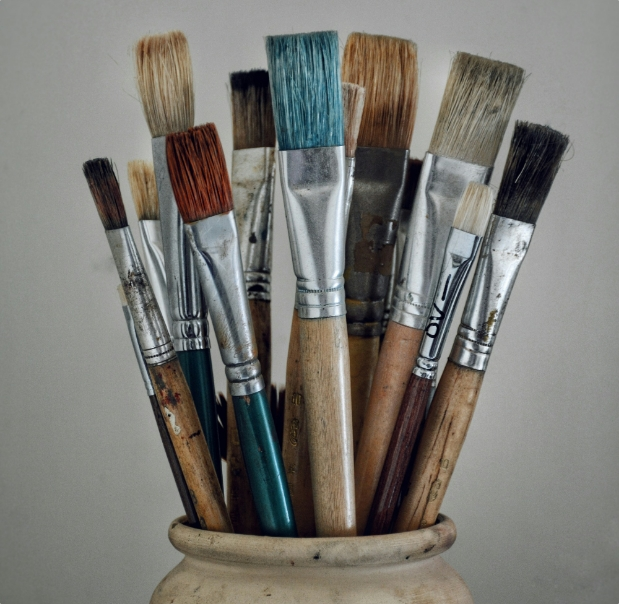

365일 불이 꺼지지 않는곳
오늘도 대전복합터미널은
오늘도 대전복합터미널은
내일을 위한 만남을 준비합니다
DTC Art Center
터미널에
터미널에
아트센터를 더하다
각기 다른 형태의 조형물들이 터미널 이용객들에게 아련한 옛 추억과 감동을 선사 하고있다
대전 터미널시티의 현주소와 가족 여행을 새로운 행복을 찾아가는 현대인들의 일상이 고스란히 녹아있는 이들 작품을들 함께 만나보자형물들이 터미널 이용객들에게 아련한 옛 추억과 감동을 선사 하고있다
